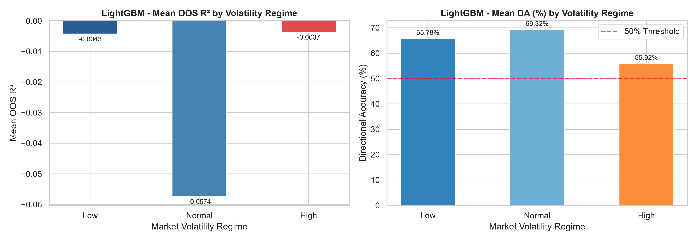
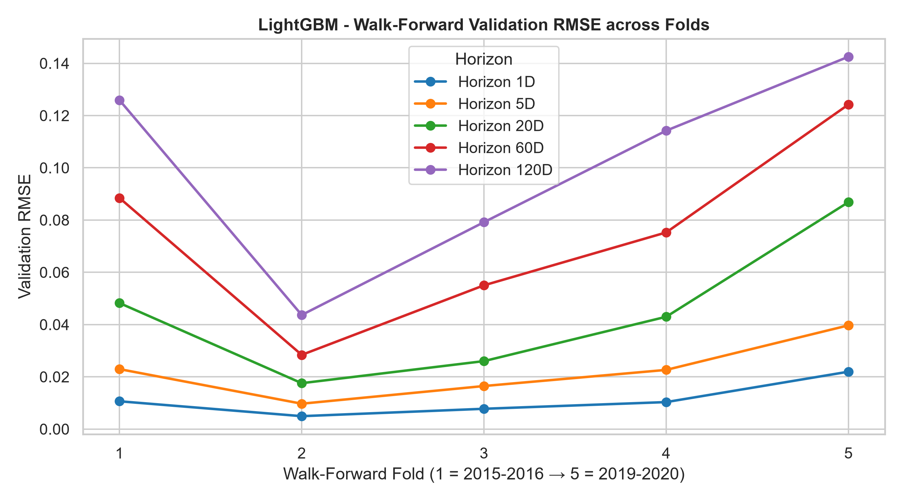

Forecast Horizon Performance
Research Project: When Does Equity Return Predictability Decay? A Multi-Horizon and Regime-Dependent Out-of-Sample Analysis
Model Family: Kernel & Tree-based ML | Model Category: Regression
Evaluation Status: Strict Walk-Forward Out-of-Sample & Independent Hold-out Verification
LightGBM{'n_estimators': 400, 'learning_rate': 0.11049890000613266, 'num_leaves': 49, 'max_depth': 10, 'min_child_samples': 34, 'subsample': 0.7840602059905246, 'colsample_bytree': 0.7428464775168512, 'reg_alpha': 0.44766655633145197, 'reg_lambda': 1.1488808987955952}The table below synthesizes predictive performance across the three evaluation stages. Note that Part A and Part B evaluate on Walk-Forward Validation (Split 2), whereas Part C evaluates on the strictly independent hold-out test set (Split 3).
| Evaluation Stage | OOS_R2 | RMSE | MAE | DA (%) | Naive Positive DA (%) | Excess DA (pp) | DM Statistic | DM p-value | Sign Test p-value | N |
|---|---|---|---|---|---|---|---|---|---|---|
| Part A – Before Tuning | N/A | N/A | N/A | N/A | 54.00% | 0.00 | N/A | N/A | N/A | N/A |
| Part B – After Tuning | -0.3026 | 0.0506 | 0.0391 | 58.60% | N/A | N/A | N/A | N/A | N/A | 1360 |
| Part C – Final Independent Test | -0.0213 | 0.0477 | 0.0381 | 64.22% | 66.61% | -0.02 | 0.3612 | 0.3534 | 0.0032 | 1362 |
Analysis of predictive decay across horizons from ultra-short term (1D) to long-term macroeconomic horizon (120D).
| Horizon | OOS_R2 | RMSE | MAE | DA | Naive_Positive_DA | Excess_DA | DM_Stat | DM_pvalue | Sign_pvalue | Observations |
|---|---|---|---|---|---|---|---|---|---|---|
| 1D | 0.0208 | 0.0104 | 0.0075 | 0.5294 | 0.5374 | -0.0081 | 1.075 | 0.1413 | 0.0161 | 1362 |
| 5D | 0.0029 | 0.0223 | 0.0166 | 0.594 | 0.594 | 0 | 0.6631 | 0.2537 | 0 | 1362 |
| 20D | 0.0061 | 0.0415 | 0.0328 | 0.6689 | 0.6689 | 0 | 1.0061 | 0.1573 | 0 | 1362 |
| 60D | 0.0289 | 0.0646 | 0.0533 | 0.7335 | 0.7496 | -0.0162 | 0.5888 | 0.278 | 0 | 1362 |
| 120D | -0.1652 | 0.0999 | 0.0801 | 0.685 | 0.7805 | -0.0954 | -1.527 | 0.9365 | 0 | 1362 |
Performance breakdown conditioned on market volatility regimes (Low, Normal, High) constructed using expanding quantiles.
| Regime | OOS_R2 | RMSE | MAE | DA |
|---|---|---|---|---|
| Low | -0.0043 | 0.03516 | 0.02906 | 0.65784 |
| Normal | -0.0574 | 0.04318 | 0.03472 | 0.69316 |
| High | -0.00372 | 0.06026 | 0.04962 | 0.55916 |

Multi-dimensional matrix displaying performance across the 5 × 3 Horizon × Regime state space.
| Horizon | Low | Normal | High |
|---|---|---|---|
| 1D | 0.0049 | 0.0089 | 0.0291 |
| 5D | -0.0039 | 0.008 | 0.0016 |
| 20D | -0.004 | -0.004 | 0.0128 |
| 60D | -0.004 | -0.0488 | 0.0932 |
| 120D | -0.0145 | -0.2511 | -0.1553 |


[!NOTE]
Single Tuned Workflow Execution: Traditional models in this research suite were tuned directly during Walk-Forward Validation (Lan01) using cross-validated Grid Search and Optuna TPE. A separate un-tuned baseline run was not persisted in the repository archives.
The Final Independent Hold-out Test (Split 3: 2020–2026, 1,362 days) serves as the definitive out-of-sample empirical evidence. All preprocessing steps and hyperparameter choices were completely frozen prior to test inference.
60D)Stability evaluation across the 5 expanding walk-forward folds (Split 2):
| Horizon | Mean_OOS_R2 | Std_OOS_R2 | Min_OOS_R2 | Max_OOS_R2 | Mean_RMSE | Std_RMSE | Mean_MAE | Mean_DA |
|---|---|---|---|---|---|---|---|---|
| 1D | -0.0237 | 0.0441 | -0.1021 | 0.0022 | 0.0111 | 0.0065 | 0.0073 | 0.5368 |
| 5D | -0.0039 | 0.0233 | -0.0231 | 0.0346 | 0.0223 | 0.0111 | 0.0156 | 0.5493 |
| 20D | -0.0814 | 0.182 | -0.4069 | 0 | 0.0443 | 0.0268 | 0.0327 | 0.6382 |
| 60D | -0.402 | 0.5375 | -1.2655 | 0.0588 | 0.0743 | 0.036 | 0.0585 | 0.6235 |
| 120D | -1.0021 | 1.3133 | -3.1266 | 0.2387 | 0.1011 | 0.0396 | 0.0816 | 0.5824 |

60D (OOS R² = 0.0289)120D (OOS R² = -0.1652)HighNormal